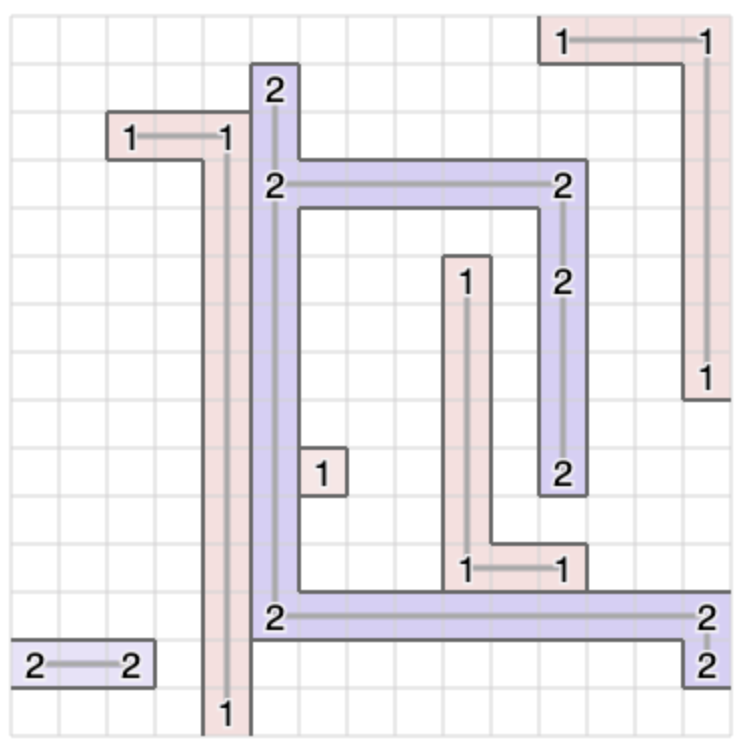

RECRUIT 日本橋ハーフマラソン 2022夏(AtCoderHeuristic Contest 013)¶

問題概要¶
- N * Nのグリッドのマスのいくつかにサーバがある
- サーバは、K種類あり、それぞれ100台ずつある
- 「移動」操作を行ってから「接続」操作を行うことができる
- 移動: サーバを1台選び、他のサーバが存在しない上下左右のいずれかに1マス動かす
- 接続: サーバを2台選び、それら同士をまっすぐなケーブルでつなぐ(他のサーバが間に存在しない、交差しない、二重にならない、自己ループしない)
- 操作は、合わせて100K回まで行うことができる
- 接続されたサーバはクラスタとなり、クラスタごとに種類と数によって性能が決まる
- 性能の和(スコア)が最大となるような操作列を求めよ
時間¶
- 168時間
個人的メモ¶
- できるだけ同種サーバだけで大きいクラスタを作る、のが難しい問題
- ざっくり、うまく焼きなまし法を適用するか、乱択山登り/貪欲を繰り返す、というのが強かった模様
- サーバを探す/動かす/どかすなどの操作の実装が結構厄介で、方針次第で結構重実装＆バグりやすい(というか想定外な挙動)状況になりえた
問題固有の性質¶
- 基本的には、2個の大きなクラスタが作れれば高得点が狙える
- スコアの計算式が2乗オーダー
- たくさんクラスタを作るよりも大きいのを少数作ったほうが良い
- ただし、どちらも小さくなる場合は、どちらか片方だけを大きくするほうがスコアが良い場合がある
- スコアの計算式が2乗オーダー
- 1番大きなクラスタの形が悪いと、2番目のクラスタが十分に大きくできない
- 1つ目が卍みたいになると2つ目が大きく取れない可能性がある
- N、Kによって性質が大きく異なる(盤面の疎密、移動回数の余裕)
戦略¶
- 大雑把に、以下の戦略(またはその派生)が良かった模様
- 焼きなまし系
- 「移動」を焼き鈍して、「接続」をBFS/DFSなどでつなげる (状態を2分して同時に最適化する)
- 良い初期解を作ってから、焼き鈍す
- 全体の操作列を状態として、焼き鈍す
- 盤面/各サーバ個別の移動列を状態として、焼き鈍す(全体の操作列は後で復元)
- 乱択山登り/貪欲/ルールベースを繰り返す系
- 近い同種サーバ(クラスタ)を見つけて、邪魔な異種サーバをどかして(必要なら移動して)つなげていく
焼きなまし¶
- 移動に文脈があるので、素直には焼きなましを適用しにくい
- 今回は、「移動の操作列自体を焼き鈍す」または「動きに制限を入れる」などで適用できた
盤面からの移動操作の復元(順序の解消)¶
- 操作列自体を状態として持っていない場合、サーバを動かした盤面から移動操作列を復元する必要がある
- ただ、最初の位置から2手以上動かしてしまうと、復元が難しくなってしまう
- 他のサーバとの依存関係(順序関係)が発生してしまう
- どけてもどるみたいな、状態としては動いていないけど実は動いていたサーバみたいなケースなどもありえる
- 「1手までに制限する」
- 一応、1手までにすれば、上記のような問題は発生しないので、貪欲に動かせるサーバを元に戻す、ような感じで操作列を復元できる
- ただし、「距離1」だとABと隣接したサーバがBAのように入れ替わる場合なども入ってしまうため、「1手」であることが必要
- 他の4近傍に移動するみたいな遷移を入れると壊れる
- 遷移可能な状態を制限(限定)するのは基本良くないが、今回の場合は1手制限でも良い状態が残るようだった
- また、1手だけの動きではつなぐことができないサーバがでてくるので、他の対処も必要
- 「他のサーバが通ったマスへは進入禁止にする」
- 密度が高いケースで不利な模様(密度が高いケースだと玉突き的に空きマスに移動するケースが発生するため？)
- 「各マスを通ったサーバーの順序を記録&逆順にしか戻さない」
探索空間の形¶
- ざっくり、1番目に大きいクラスタがスコアの大部分を占めるので、K種類のどれか？でおおよそK個ぐらいの大きめの山がある(多峰)と思われる
- 単純な状態/遷移の焼きなましだと、複数の山を行き来できるような大きな近傍なり、評価関数を変えて単峰に近くするなりできないと、登る山によってスコアが結構ブレる
- 自分のだと6000点～8000点ぐらい実行ごとにブレるケースなどが普通にあった
- なので、いろんなクラスタの形(登る山)を試せるような手法が必要だったかも
ルールベース¶
クラスタ(木)を大きくしていく方法¶
- いろいろな方法があった模様
- 近い同種のサーバ/クラスタを見つけて、つないでいく
- 「近い」は、必要な操作が少ない、など
- 単純な距離、邪魔なサーバ数、どかすのに必要操作数、・・・
- BFS、プリム法、ダイクストラ法など
- つなげるためにサーバを移動する位置の決定方法
- 「近い」は、必要な操作が少ない、など
- (言葉で書くと単純に見えるが、実装しようとすると結構しんどい)
性質の良い形¶
- クラスタの形が偏ることで悪い形になるのを避けるため、良い形に制限や初期値として利用
- 外周に這わせる、外周をあける
- 「E」と「反転させたE」を噛み合せたような形
その他¶
解説¶
(50位まで&発言を見つけられた方のみ)
- 1位bowwowforeachさん
- https://twitter.com/bowwowforeach/status/1559543482154246145
- https://twitter.com/bowwowforeach/status/1559545706049781760
- https://twitter.com/bowwowforeach/status/1559518385603371008
- https://twitter.com/bowwowforeach/status/1559523139461165058
- https://twitter.com/bowwowforeach/status/1559524594637189120
- https://twitter.com/bowwowforeach/status/1559529035020980225
- https://twitter.com/bowwowforeach/status/1559830158806114304
- https://bowwowforeach.hatenablog.com/entry/2022/08/18/205537
- 2位wleiteさん
- 3位saharanさん
- 4位wanuiさん
- 5位WA_TLEさん
- 6位iwashi31さん
- https://twitter.com/iwashi31/status/1559521513476263936
- https://twitter.com/iwashi31/status/1559511879646527488
- https://twitter.com/iwashi31/status/1559513584702353408
- https://twitter.com/iwashi31/status/1559525902433693696
- https://twitter.com/iwashi31/status/1559511352795795456
- https://twitter.com/iwashi31/status/1559520296272465920
- https://twitter.com/iwashi31/status/1559523676017479686
- https://twitter.com/iwashi31/status/1559538263387279361
- https://twitter.com/iwashi31/status/1559552745450790912
- https://twitter.com/iwashi31/status/1559553978152628225
- https://twitter.com/iwashi31/status/1560656905080516611
- https://twitter.com/iwashi31/status/1561148775690711041
- https://iwashi31.hatenablog.com/entry/2022/08/17/000241
- 7位nagissさん
- 8位yunixさん
- 9位ynasuさん
- 10位yowaさん
- 11位EmKさん
- 12位fgwiebfaoishさん
- 13位Shibuyapさん
- 14位neterukunさん
- 15位tsukammoさん
- 17位fuppy0716さん
- 18位terry_u16さん
- https://twitter.com/terry_u16/status/1559515985732050945
- https://twitter.com/terry_u16/status/1559515416665690112
- https://twitter.com/terry_u16/status/1559514917891612672
- https://twitter.com/terry_u16/status/1559516317396652032
- https://twitter.com/terry_u16/status/1559519435785785344
- https://twitter.com/terry_u16/status/1559513183525965825
- https://www.terry-u16.net/entry/ahc013-diary
- https://www.terry-u16.net/entry/ahc013
- 19位xyz600さん
- 20位rhooさん
- 21位simanさん
- 22位tishii24さん
- 23位sas4ekaさん
- 24位hiro116sさん
- 25位nutsさん
- 26位brown_amaurotisさん
- 27位rabotさん
- 28位penguin46さん
- 29位ChiyosBigDragonさん
- 30位mtsdさん
- 31位ks2mさん
- 32位phocomさん
- 33位sensaurさん
- 34位manta1130さん
- 35位ytknさん
- 36位kawateaさん
- 37位toamさん
- 38位newbiedmyさん
- 39位Sullyperさん
- 40位fky_さん
- 41位niuezさん
- 42位birdwatcherさん
- 43位tamatoさん
- 44位totori0908さん
- 45位hamamuさん
- 46位maeda3さん
- 47位merhornさん
- 48位ashmelvさん
- 49位besukohuさん
- 50位ponjuiceさん
- tester解、コメント(tomerunさん)
- https://twitter.com/tomerun/status/1559511893668114432
- https://twitter.com/tomerun/status/1559513729682661378
- https://twitter.com/tomerun/status/1559518125195792386
- https://twitter.com/tomerun/status/1559525161635704832
- https://twitter.com/tomerun/status/1559525894225506305
- https://twitter.com/tomerun/status/1559514969489625088
- https://twitter.com/tomerun/status/1559951430752305153
- https://twitter.com/tomerun/status/1559911139139796992
- スコア最大値(ベストスコアを集めた場合)